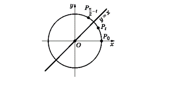
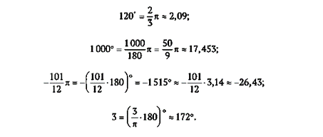
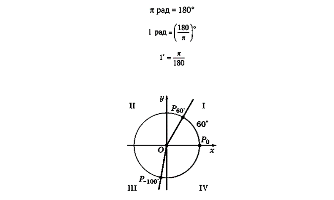
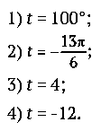
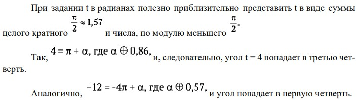
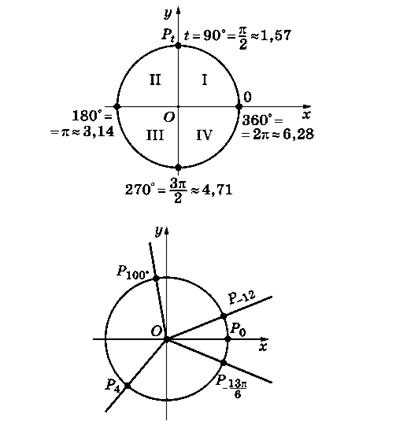
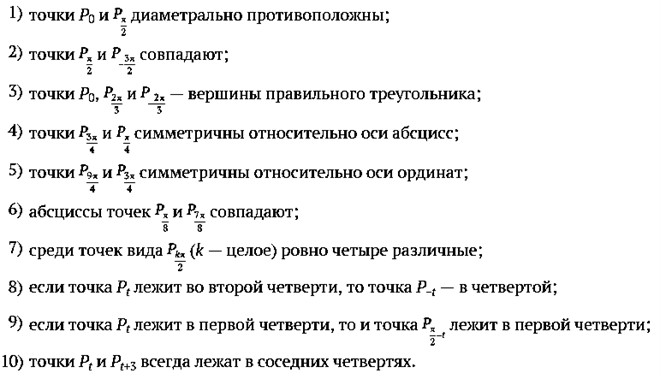
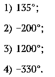
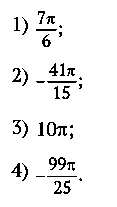
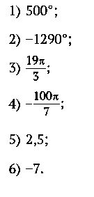

В планиметрии углом называют часть плоскости, заключенную между двумя лучами с общей вершиной. Такие углы можно назвать плоскими. Плоские углы можно измерять как доли полного угла. При измерении в градусах полный угол принимается за 360 градусов (360°). Одну шестидесятую долю градуса называют (угловой) минутой, а одну шестидесятую долю минуты — секундой. Запись ∠A = 100°12′23′′ означает, что угол A имеет меру 100 градусов, 12 минут и 23 секунды. При измерении углов в радианах поступают следующим образом. Проводят окружность единичного радиуса с центром в вершине угла. Угол измеряется длиной стягивающей его дуги этой окружности. Полный угол будет иметь радианную меру, равную длине окружности радиуса 1, т. е. 2p + 6,28. Число π (радианная мера развернутого угла) часто используется в качестве самостоятельной единицы, и углы измеряются в долях p. Например, угол 30° имеет меру
Формулы перехода от градусной меры к радианной и обратно таковы:

Полезно запомнить, что часто встречающийся угол 60° чуть больше одного радиана: 60° + 1,07.
Изменение углов- в градусах

- в радианах

При R = 1 длина окружности C = 2p. Стягиваемый ею полный угол равен 360°.

2. Вращательное движение
Помимо плоских углов в геометрии рассматривают углы между прямыми и плоскостями, двугранные и многогранные углы, углы между векторами и т. п. Понятие угла возникает также в физике при изучении различных колебательных процессов, простейшие из которых можно описать с помощью вращательного движения.
Возьмем окружность радиуса 1 с центром в точке O. Проведем луч Ox с центром в точке O. Этот луч будем называть неподвижным. Возьмем другой экземпляр такого же луча и начнем его поворачивать вокруг точки O. Этот подвижный луч обозначим через Ot. Движение подвижного луча можно описать, введя понятие угол поворота. Точку пересечения неподвижного луча с единичной окружностью обозначим через P0, а подвижного — через P. Поворот подвижного луча можно задать, рассматривая движение точки P по окружности. Угол поворота подвижного луча можно определить как длину пути, пройденного точкой P от начального положения P0.
Так как вращение луча может происходить в двух различных направлениях, то одно из них считаем положительным (традиционно положительным направлением считается вращение против часовой стрелки), а противоположное — отрицательным. С учетом направления вращения углу приписывается знак «+» или «−».
Итак, поворот можно измерить действительным числом t, равным длине пути, который прошла точка P, с определенным знаком в зависимости от направления поворота.
Обратно: каждому действительному числу t можно сопоставить поворот луча Ot, двигая точку P по окружности, заставляя ее пройти путь, равный |t| в направлении, определяемом знаком числа t. Угол поворота


Свойства вращательных движений
1.Для всякого целого числа k точка Pt совпадает с точкой Pt+2pk.

2.Если то найдется такое целое число k, что
то найдется такое целое число k, что 

3.Для всякого значения t точки Pt и Pt+p диаметрально противоположны.

4.Для всякого значения t точки Pt и P−t симметричны друг другу относительно оси абсцисс.

5.Для всякого значения t точки Pt и P−t+p симметричны относительно оси ординат.

6.Для всякого значения t точки симметричны друг другу относительно биссектрисы первого и третьего координатных углов.

Решение задач
1.Перевод градусной меры измерения углов в радианную и обратно.
Один и тот же угол можно записать в градусах и радианах. При этом величину угла в радианах часто можно записать как рациональную долю угла p. Это можно делать для углов, соизмеримых с развернутым:
Основные соотношения единиц измерения углов поворота

2.Определение четверти, в которой лежит угол.Координатные оси разбивают плоскость на четыре четверти. При сопоставлении числу t точки Pt на единичной окружности часто полезно сначала определить, в какой четверти будет лежать эта точка (или, как часто говорят, в какой четверти (I, II, III, IV) будет лежать данный угол t). При решении этой задачи надо учесть знак числа t (это определит направление движения) и сопоставить меру угла (градусную, радианную, в долях p) с соответствующей мерой одной четверти (прямого угла) — 90°, 1,57, Одновременно можно решать задачу построения точки Pt на единичной окружности для заданного значения t. На рисунке выполнено это построение для следующих значений t:



ВОПРОСЫ И ЗАДАНИЯ
1.Проверьте верность следующих утверждений:

2.Выразите углы в долях р:

3.Переведите углы в градусную меру

4.Определите, в какой четверти лежит данный угол:
